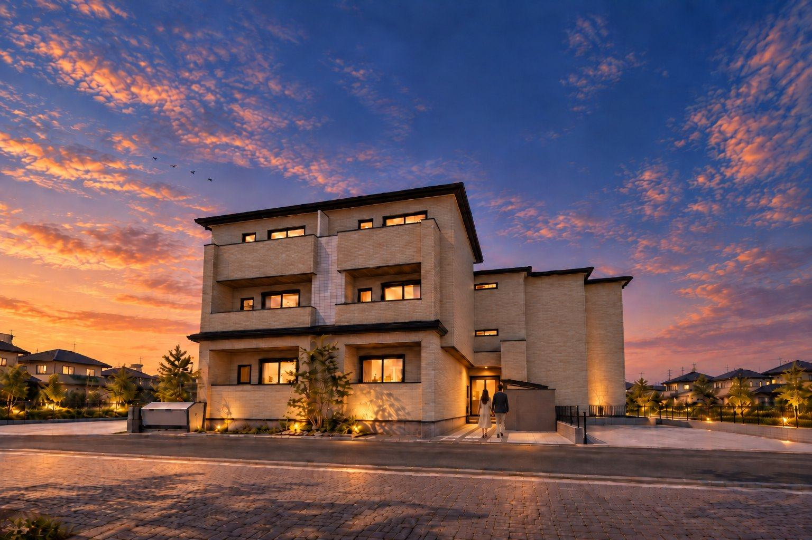
間。
MA / SPACE FOR LIVING
都市と、暮らしのあいだに。
住まいに、
間を。
都市へ近づくほど、住まいまで小さくする必要はない。
利便性を手にしながら、暮らしの広がりも大切にする。
そのために、一邸一邸の空間を考える。
京都駅徒歩7分。
住戸の数だけでは測れない価値を、この場所に。
暮らしに、深く。
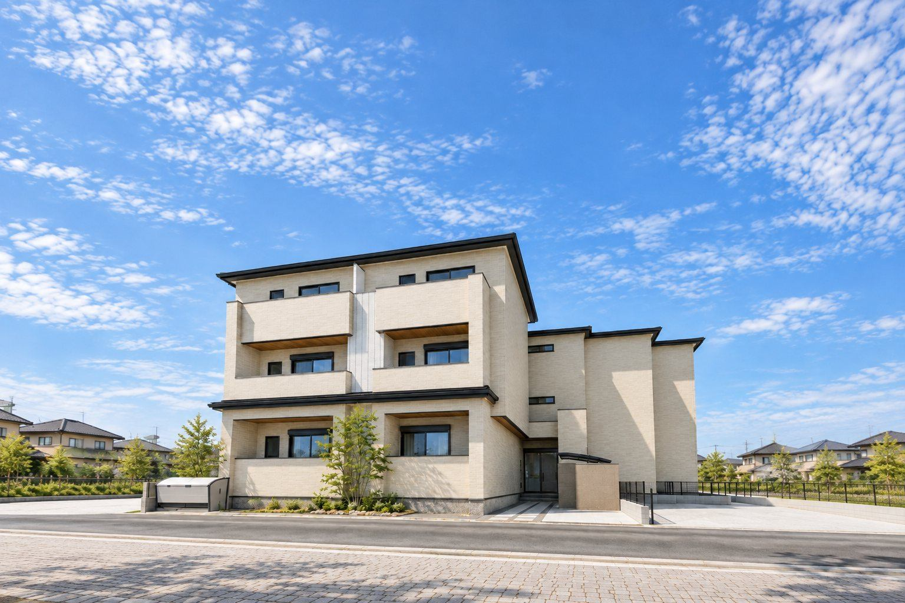
和の静けさを、
現代の輪郭に。
低く伸びる下屋が生む水平のリズム。深い陰影を添える木調軒天。華美な装飾に頼らず、素材の表情と線の重なりによって、和モダンの穏やかな佇まいを描きます。
線から、
佇まいへ。
一本の線からはじまる、住まいの輪郭。
下屋の水平線と、木調軒天がつくる奥行き。
和の静けさを現代の暮らしへと重ねていく、その表情をたどります。
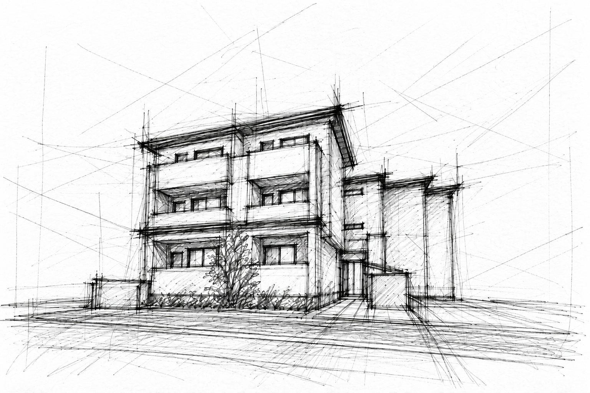
下屋が生む、水平の美。
低く差し出す屋根のラインが、三層の建物に落ち着いた重心を与える。街に対して穏やかに構える、和の佇まい。
木調軒天に、温もりを。
庇の奥にのぞく木の色合い。外壁の明るさとほどよく対比し、光の加減で変わる繊細な陰影を生みます。
和を、語りすぎない。
和風の装飾を重ねるのではなく、線、素材、陰影の調和から導く和モダン。住まいに、静かな品格を。
日々を重ねる、
住まいの余白。
二人で過ごす時間も、それぞれがくつろぐ時間も。やわらかな光と木の温もりに包まれた、2LDKの暮らしを二つの視点から描きます。
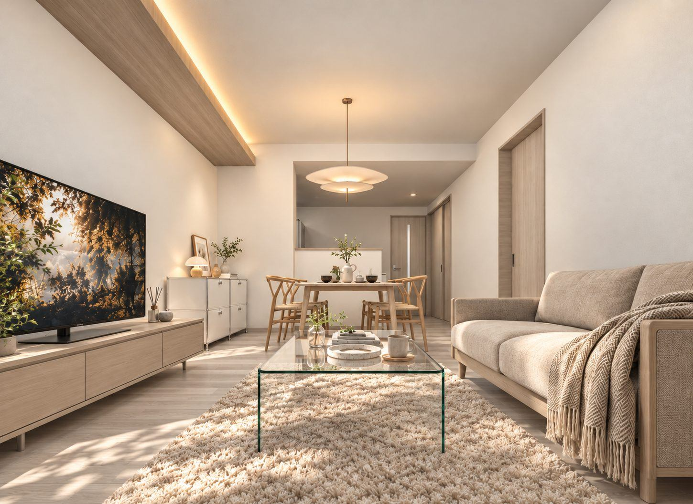
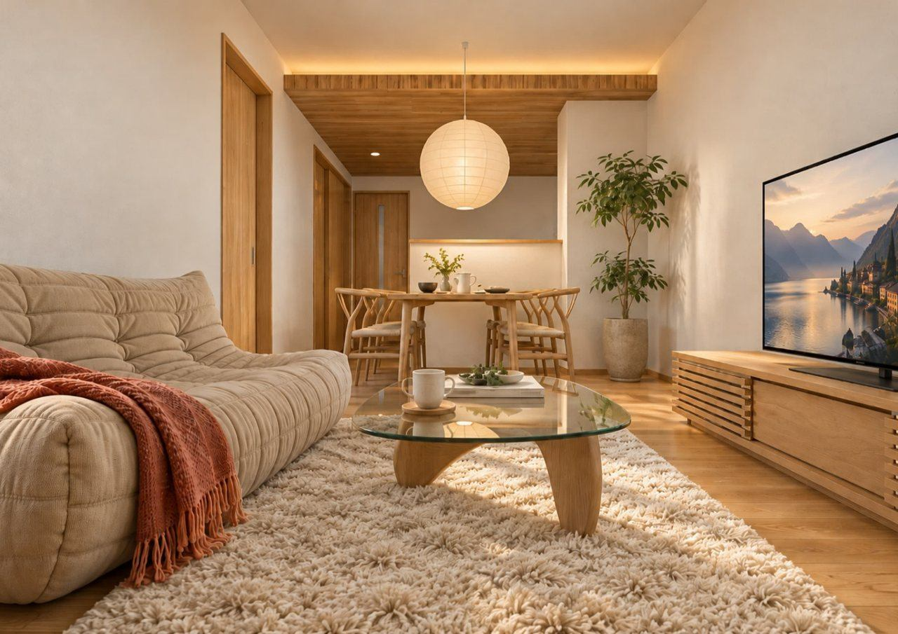
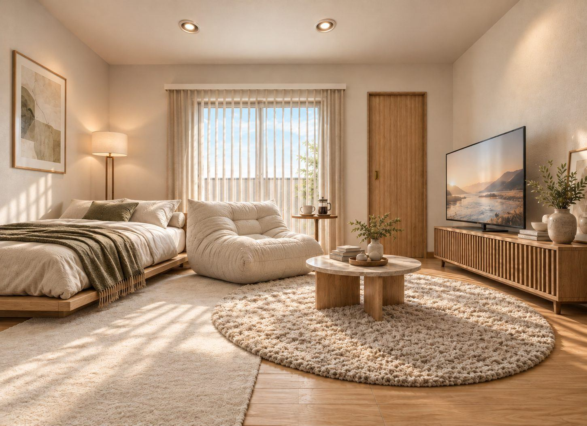
ひとりの時間に、
自由な間を。
ワンルームだからこそ、過ごし方はもっと自由に。眠る、くつろぐ、好きなことに没頭する。ひとつの空間で、自分らしい時間を楽しむ住まい。
数よりも、
暮らしの密度。
都市生活に求める広さと使い勝手を、住戸構成の中心に据えました。
2LDK
二人暮らしから家族との時間まで。
今回の計画を象徴する住戸構成。
1LDK
自分のペースで、心地よく。
日常の多様な過ごし方に対応する住まい。
1 ROOM
シンプルな暮らしにも、ゆとりを。
独立した時間を楽しむ一邸。
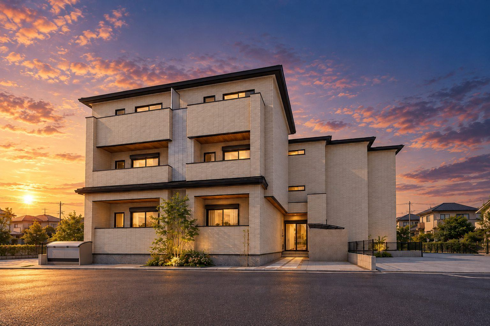
ARCHITECTURAL IMAGE / BLUE HOUR空間を、確かめる。
各階の計画図を切り替えてご覧いただけます。
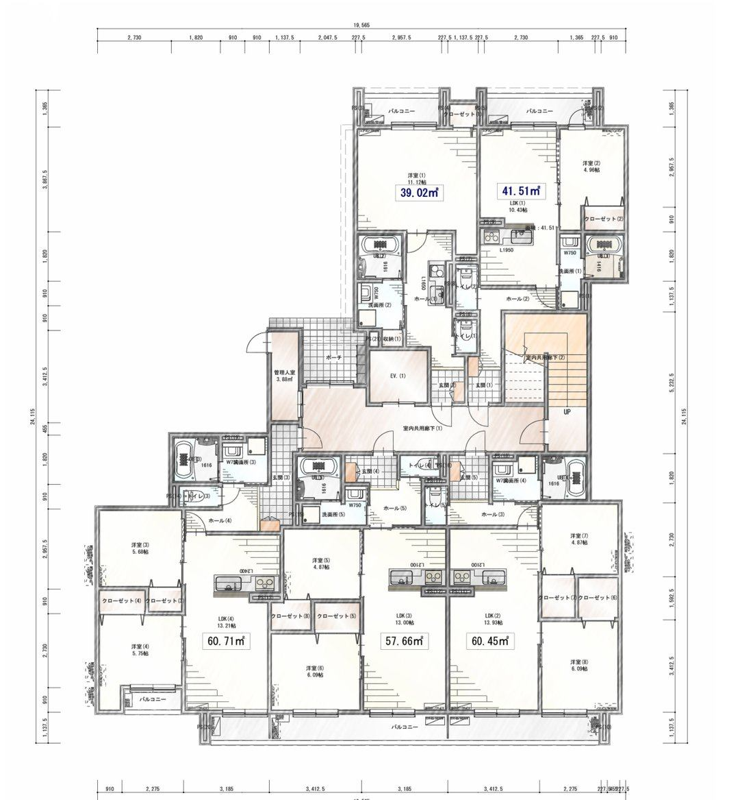
光で、表情を変える。
昼の凛とした輪郭。夕暮れに灯る、柔らかな温もり。
一日の時間とともに移ろう、建物の佇まい。
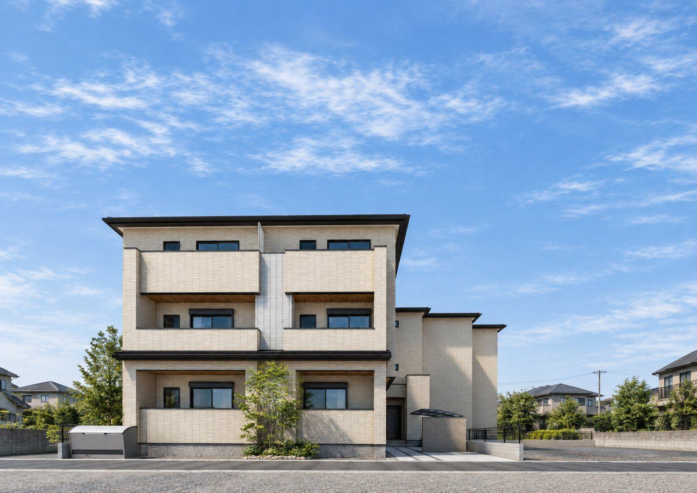
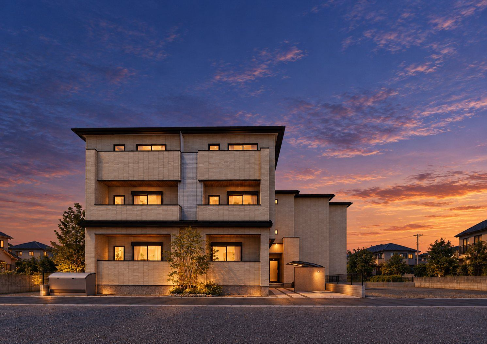
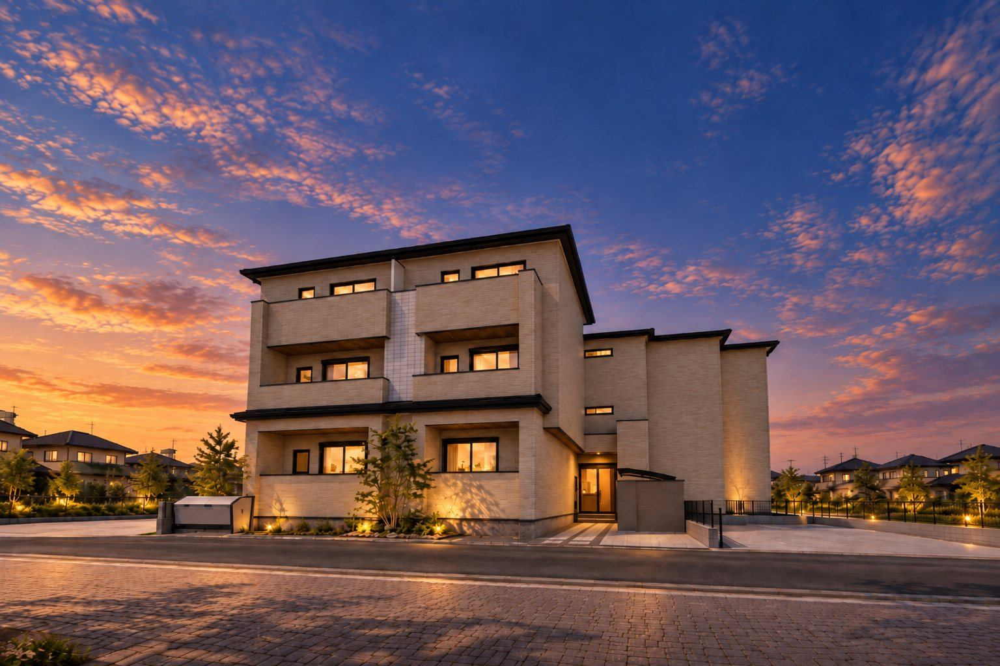
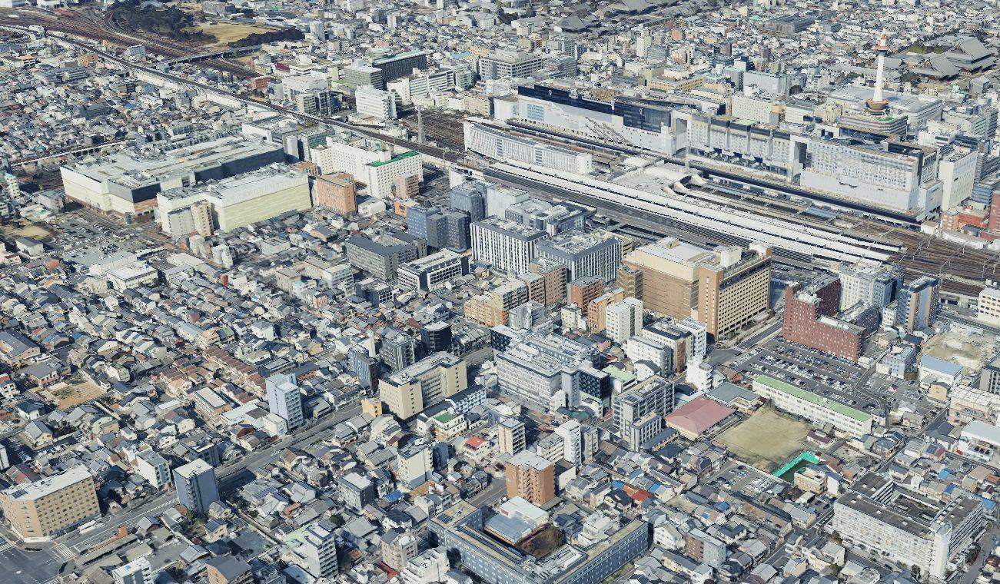
京都を、
日常にする。
京都市南区東九条南山王町29-2。
京都駅を日々の行動圏に収める立地。移動の自由が広がる場所で、住まいの充実も選ぶ。
SPACE FOR LIVING / HIGASHIKUJO, KYOTO